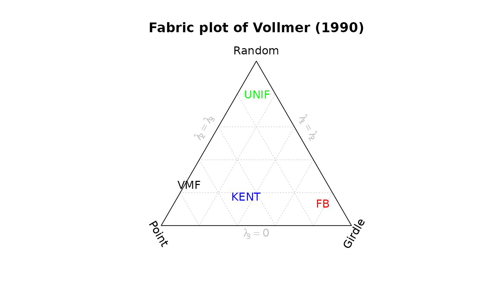

Creates a fabric plot using the eigenvalue method
Usage
vollmer_plot(x, labels = NULL, add = FALSE, ngrid = c(5, 5, 5), ...)Arguments
- x
either an object of class
"Vec3","Line","Ray", or"Plane", where the rows are the observations and the columns are the coordinates, or an"ortensor"object.- labels
character. text labels
- add
logical. Should data be plotted to an existing plot?
- ngrid
integer or 3-element vector specifying the amount of gridlines for the P, G, and G axes. Constant grid spacing when only one integer is given.
NULLwhen no grid.- ...
optional graphical parameters
References
Vollmer, F. W. (1990). An application of eigenvalue methods to structural domain analysis. Geological Society of America Bulletin, 102, 786<U+2013>791.
See also
Other fabric-plot:
flinn_plot(),
hsu_plot(),
woodcock_plot()
Examples
set.seed(20250411)
mu <- Line(120, 50)
a <- rvmf(100, mu = mu, k = 10)
vollmer_plot(a, lab = "VMF")
#> Warning: NAs introduced by coercion
set.seed(20250411)
b <- rfb(100, mu = mu, k = 1, A = diag(c(10, 0, 0)))
vollmer_plot(b, lab = "FB", add = TRUE, col = "red")
set.seed(20250411)
c <- runif.spherical(n = 100, "Line", method = "rotasym")
vollmer_plot(c, lab = "UNIF", add = TRUE, col = "green")
set.seed(20250411)
d <- rkent(100, mu = mu, k = 10, b = 4)
vollmer_plot(d, lab = "KENT", add = TRUE, col = "blue")
title("Fabric plot of Vollmer (1990)")
